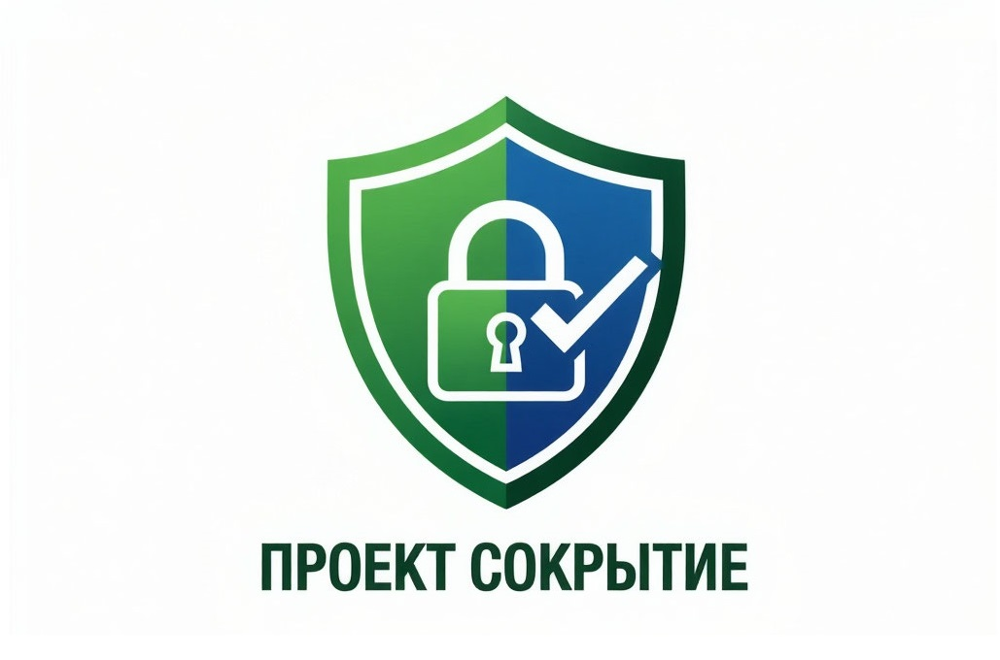

Выявление организаций, скрывающих денежные средства для уклонения от уплаты налогов, сборов и страховых взносов. Дополнительный функционал в АС «Каскад» для оценки деловой репутации.
Узнать больше →
Почему проект «Сокрытие» критически важен для экономической безопасности
В течение последних лет, в условиях ужесточения налогового контроля, отмечается устойчивая тенденция к совершению руководства организаций крупного и среднего бизнеса налоговых преступлений, ответственность за которые предусмотрена УК РФ. Ключевое место среди них занимает ст. 199.2 Уголовного кодекса Российской Федерации, предусматривающая ответственность за сокрытие денежных средств либо имущества организации или индивидуального предпринимателя, за счёт которых должно производиться взыскание недоимки по налогам, сборам и страховым взносам. При этом действующие механизмы контроля не обеспечивают оперативного выявления и пресечения подобных схем. Путем внесения в АС «Каскад» дополнений, которые предлагаются в проекте «Сокрытие», мы получим возможность досрочно оценивать деловую репутацию заемщиков в направлении налоговых преступлений.
В связи с досрочным выявлением рисков для Банка в части совершения преступления заемщиком, Банк сможет сохранить свои денежные средства либо предпринять дальновидные меры (введение ковенантов, отказ от сделки) для сохранения своих денежных средств. Экономический эффект будет составлять не менее 300 млн рублей в год.
Полный цикл от сбора данных до финальной проверки для обеспечения прозрачности финансовых потоков.
Автоматизированный сбор с сайта ФНС в разделе «Прозрачный бизнес» — «Сведения о суммах недоимки и задолженности по пеням и штрафам».
● В реальном времениСбор из АС «Каскад» в разделе «Ограничения по счетам ФНС/ФТС» — «Сумма неуплаты налогов».
● В реальном времениОтслеживание истечения срока, указанного в требовании ФНС об уплате недоимки и задолженности по пеням и штрафам свыше 3,5 млн рублей.
● Вывод датыСбор и анализ транзакций аффилированных организаций (по учредителю/директору/бенефициару) и ближайших контрагентов за последние 2 года при сумме задолженности ≥ 3,5 млн после истечения срока.
● Глубинный анализАвтоматизированный вывод собранной информации по четырём вышеуказанным показателям в АС «Каскад» для дальнейшего использования в мониторинге.
● ИнтеграцияФинальная верификация полученных данных сотрудником, осуществляющим мониторинг деловой репутации контрагентов.
⚡ Контроль качестваПроект помогает выявлять организации, формально подпадающие под состав преступления, предусмотренного статьёй 199.2 Уголовного кодекса Российской Федерации. Так же, данный проект будет давать дополнительную возможность обмена данными с ПХО/ФНС для дальнейшего взаимодействия/анализа недобросовестных заемщиков.